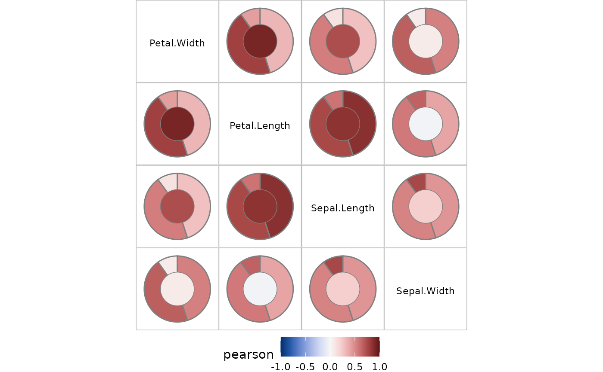

Adds number of observations column to pairwise tibble
Examples
irisc <- pairwise_scores(iris[40:150,], by= "Species")
irisc <- add_nobs_to_pairwise(irisc, iris[40:150,], by= "Species")
irisc
#> # A tibble: 24 × 7
#> x y score group value pair_type n
#> <chr> <chr> <chr> <fct> <dbl> <chr> <int>
#> 1 Petal.Length Sepal.Length pearson setosa 0.584 nn 11
#> 2 Petal.Width Sepal.Length pearson setosa 0.112 nn 11
#> 3 Sepal.Length Sepal.Width pearson setosa 0.756 nn 11
#> 4 Petal.Length Sepal.Width pearson setosa 0.650 nn 11
#> 5 Petal.Width Sepal.Width pearson setosa 0.0694 nn 11
#> 6 Petal.Length Petal.Width pearson setosa 0.421 nn 11
#> 7 Petal.Length Sepal.Length pearson versicolor 0.754 nn 50
#> 8 Petal.Width Sepal.Length pearson versicolor 0.546 nn 50
#> 9 Sepal.Length Sepal.Width pearson versicolor 0.526 nn 50
#> 10 Petal.Length Sepal.Width pearson versicolor 0.561 nn 50
#> # ℹ 14 more rows
plot_pairwise(irisc) # setosa gets a small slice in proportion to n
